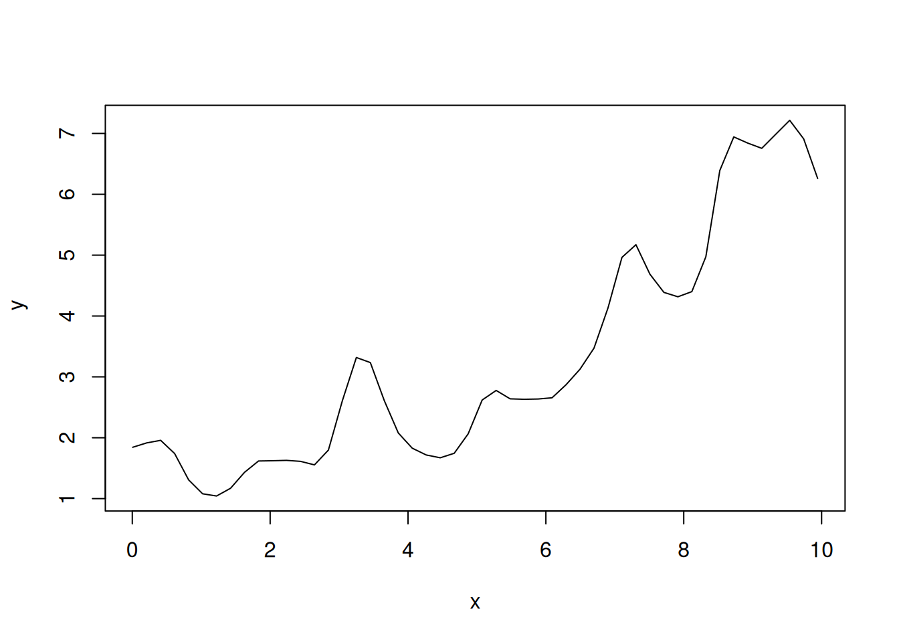

# Install and load the package
library(np)Nonparametric Kernel Methods for Mixed Datatypes (version 0.60-20)
[vignette("np_faq",package="np") provides answers to frequently asked questions]
[vignette("np",package="np") an overview]
[vignette("entropy_np",package="np") an overview of entropy-based methods]# 1. Generate dummy count data
set.seed(123)
n <- 100
x <- runif(n, 0, 10)
# Poisson-like response influenced by x
y <- rpois(n, lambda = exp(0.2 * x))
# 2. Compute Bandwidth (Automatically detects type)
# otype = "ordered" treats y as count data
bw <- npregbw(xdat = x, ydat = y, regtype = "lc")
Multistart 1 of 1 |
Multistart 1 of 1 |
Multistart 1 of 1 |
Multistart 1 of 1 /
Multistart 1 of 1 |
Multistart 1 of 1 |
summary(bw)
Regression Data (100 observations, 1 variable(s)):
Regression Type: Local-Constant
Bandwidth Selection Method: Least Squares Cross-Validation
Bandwidth Type: Fixed
Objective Function Value: 2.52288 (achieved on multistart 1)
Exp. Var. Name: x Bandwidth: 0.2615489 Scale Factor: 0.2305235
Continuous Kernel Type: Second-Order Gaussian
No. Continuous Explanatory Vars.: 1
Estimation Time: 0.005 seconds# 3. Fit the model
model <- npreg(bw)
# 4. Summary and Plot
summary(model)
Regression Data: 100 training points, in 1 variable(s)
x
Bandwidth(s): 0.2615489
Kernel Regression Estimator: Local-Constant
Bandwidth Type: Fixed
Residual standard error: 1.331485
R-squared: 0.683612
Continuous Kernel Type: Second-Order Gaussian
No. Continuous Explanatory Vars.: 1plot(model, errors = TRUE)